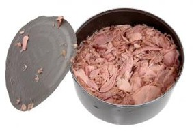
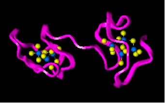

| METALS IN MEDICINE AND THE ENVIRONMENT | |||
| Metals | Metals in Seafood | ||
Seafood is a source of nutrition and sustenance for much of the world, with many coastal nations relying heavily on its abundance. These dependent nations have inspired a significant amount of research concerning the health of inhabitants whose diets may contain large amounts of contaminated aquatic flora and fauna. This is especially true in industrialized countries where heavy metals pollute land and water. However, the level of contaminants in packaged seafood available globally makes consumption a concern around the world. Lead, cadmium, and mercury are of particular interest, since low biological concentrations can cause tremendous health defects (1). High doses of lead in children can cause lead encephalopathy, which is characterized by cerebral edema, resulting in brain deformation. Mercury poisoning can be caused by inorganic or organic mercury exposure, with its organic state of concern in biological sources. Biological mercury exists in the methylated form, which breaks the blood-brain barrier, resulting in glial inflammatory response and severe neural necrosis (1). Cadmium poisoning is linked to renal dysfunction and decreased bone mineral density (2). Lead, cadmium, and mercury appear to be significantly bioavailable, with seafood a viable, yet variant source of uptake. Fortunately, several studies suggest that lead is not present in seafood at significant enough concentrations to be unfit for consumption (3). A large source of methylmercury in fish is canned albacore tuna, which contains more than light tuna and other species of fish and shellfish, and is often the most commonly consumed fish product (4).a  Many people, including expecting mothers, consume seafood as a rich source of beneficial nutrients, such as omega-3 fatty acids. Maternal consumption of fish is linked with fetal methylmercury exposure and subsequent decreased cognitive capacity of children (5). The concomitance of methylmercury and beneficial omega-3 fatty acids reveals that a proper balance between the two needs to be considered when choosing seafood. While tuna contains higher levels of methylmercury than salmon and shrimp, it contains lower levels of omega-3 fatty acids, and vice versa (6). Thus, the latter are appealing fish sources of fatty acids that contain lesser amounts of mercury.
Metal contamination is obviously not consistent across marine species. Generally, fish contain more mercury than cephalopod mollusks, which contain more mercury than crustaceans. Cadmium concentration is substantially higher in cephalopod mollusks than fish and crustaceans, a phenomenon contributed to the cephalopod’s capacity to detoxify metals in lysosomes. Interestingly, cephalopods appear to lack metallothionein, so other highly developed methods of detoxification must be present to account for their ability to contain high levels of cadmium (7).  Intra-species contamination also differs depending on the region of interest. This can lead to assumptions about regional pollution and industrialization. Oysters offer insight to local marine metal concentrations, since filter feeding predisposes them to heavy metal intake. Pacific oysters off the coast of Washington to Alaska contain significantly higher levels of cadmium than those harvested from the Atlantic coast (8). Malaysian oysters also contain large amounts of cadmium (9). Cadmium bioaccumulation in cephalopods is much more significant in sub-Arctic zones than lower latitudes, corresponding to higher levels of cadmium in top predators of the area (10). Not surprisingly, contaminated seafood is not limited to foreign locales, but pervades nearly every country where marine foodstuffs are available. Blood metal concentration analysis of New York City residents revealed a positive correlation between seafood consumption and blood mercury levels, with Asian adults containing the highest concentration. Surprisingly, New York City residents who did not consume higher than average amounts of seafood still had much higher blood mercury concentrations (2). The variability of seafood metal concentrations makes a generalization about one species, region, or metal difficult. The safety of consumption is largely dependent on regional pollution and the bioavailability of each metal for each organism. Though the focus of most research appears to be on the highly toxic heavy metals, concentrations of others such as Al, Be, Cr, Co, Cu, Fe, Mn, Mo, Ni, Sb, Tl, V and Zn are often determined with varying results. Arsenic and zinc have been found in some cases to be unacceptably concentrated in fish and oysters (9, 11, 12). Since the removal of heavy metals and other contaminants from seafood is nearly impossible, other methods of prevention need to be considered. Reducing pollution in industrialized nations is entirely possible and would likely reduce aquatic contamination. Biosorption, or the use of biological materials to accumulate heavy metals has been proven to be an efficient and low cost method of extracting pollutants from wastewater. Algae, bacteria, and fungi are useful organisms in this process, and may be used to prevent runoff pollutants from entering areas of marine life (13). References (1) Selinus, O., Alloway, B., Centeno, J.A., Finkelman, R.B., Fuge, R., Lindh, U., Smedley, P. Essentials of Medical Geology, Elsevier Academic Press, 2005. (2) McKelvey, W., Gwynn, R.C., Jeffery, N., Kass, D., Thorpe, L.E., Garg, R.K., Palmer, C.D., Parsons, P.J. A Biomonitoring Study of Lead, Cadmium, and Mercury in the Blood of New York City Adults. Environmental Health Perspectives 115 (10), 1435-1441 (2007). (3) Storelli, M.M., Potential human health risks from metals (Hg, Cd, and Pb) and polychlorinated biphenyls (PCBs) via seafood consumption: Estimation of target hazard quotients (THQs) and toxic equivalents (TEQs), Food and Chemical Toxicology 46, 2782-2788 (2008). (5) OkenE, Radesky JS,WrightRO, et al. Maternal fish intake during pregnancy, blood mercury levels, and child cognition at age 3 years in a US cohort. American Journal of Epidemiology 167, 1171–1181 (2008). (6) Mahaffey, K.R., Clickner, R.P., Jeffries, R.A. Methylmercury and omega-3 fatty acids: Co-occurrence of dietary sources with emphasis on fish and shellfish. Environmental Research 107, 20-29 (2008). (7) Bustamante, P., Cosson, R.P., Gallien, I., Caurant, F., Miramand, P., Cadmium detoxification processes in the digestive gland of cephalopods in relation to accumulated cadmium concentrations. Marine Environmental Research 53, 227-241 (2002). (8) Copes, R., Clark, N.A., Rideout, K., Palaty, J., Teschke, K. Uptake of cadmium from Pacific oysters (Crassostrea gigas) in British Columbia oyster growers, Environmental Research 107, 160-169 (2008). (9) Najiah, M., Nadirah, M., Lee, K.L., Lee, S.W., Wendy, W., Ruhil, H.H., Nurul, F.A., Bacteria flora and heavy metals in cultivated oysters Crassostrea iredalei of Setiu Wetland, East Coast Peninsular Malaysia. Vet Res Commun 32, 377-381 (2008). (10) Bustamante, P., Caurant, F., Fowler, S.W., Miramand, P., Cephalopods as a vector for the transfer of cadmium to top marine predators in the north-east Atlantic Ocean. Science of the Total Environment 220, 71-80 (1998). (11) Agah, H., Leermakers, M., Elskens, M., Fatemi, S.M., Baeyens, W., Accumulation of trace metals in the muscle and liver tissues of five fish species from the Persian Gulf. Environmental Monitering and Assessment (2008). (12) Türkmen, A., Tepe, Y., Türkmen., M., Metal Levels in Tissues of the European Anchovy, Engraulis encrasicolus L., 1758, and Picarel, Spicara smaris L., 1758, from Black, Marmara and Aegean Seas. Bull Environ Contam Toxicol 80, 521-525 (2008). (13) Ahalya, N., Ramachandra, T.V., Kanamadi, R.D. Biosorption of Heavy Metals. Image Sources http://margotmystic.files.wordpress.com/2008/07/canned-tuna.jpg http://en.wikipedia.org/wiki/Alpha-linolenic_acid Author: Anders Nelson
|
|||
| Topics | |||
|
|||
{kind=link}
{kind=link}